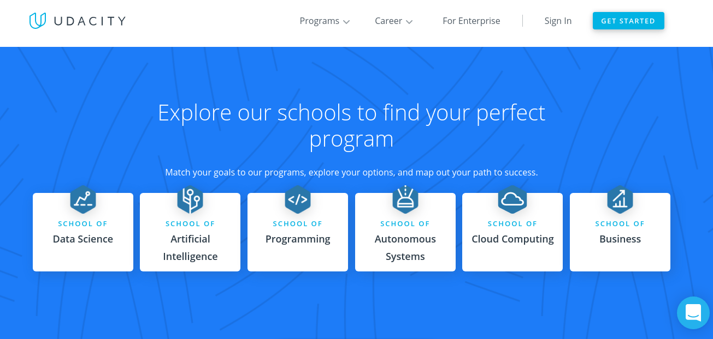

Courses
Sites For Free Online Education helps you to learn courses at your comfortable place. The courses of these websites are offered by top universities. You can learn a specific subject without much investment. These websites offer many audio, video, articles, and e-books to increase your knowledge. The platforms enable you to learn the best free online courses.

